Pfannkuchen und Seen
Tag 45
Tornio - Kuivaniemi 82 km
Am Abend zuvor hatte ich Franz getroffen der ebenfalls um die Ostsee radeln will. Da er Lehrer ist hat er nur 6 Wochen Zeit und ist somit auch was zügiger unterwegs und macht seltener mal nen Abstecher. Am Morgen waren wir ungefähr gleichzeitig fertig und da wir beide noch in die Stadt wollte fuhren wir ein Stück gemeinsam. Unsere Wege trennten sich am Fahrradladen, wo Franz sich ein neues Hinterrad besorgen wollte.
Den größten Teil des Tages ging es über oder entlang der Schnellstraße. Am Nachmittag fuhr ich gerade zu einem Campingplatz direkt an der Ostsee als Franz plötzlich hinter mir auftauchte. Dort konnte ich das erste mal wirklich in der Ostsee schwimmen.
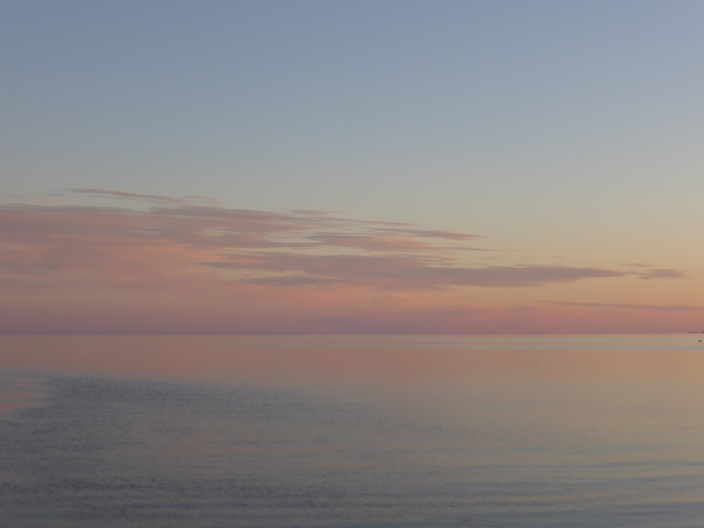 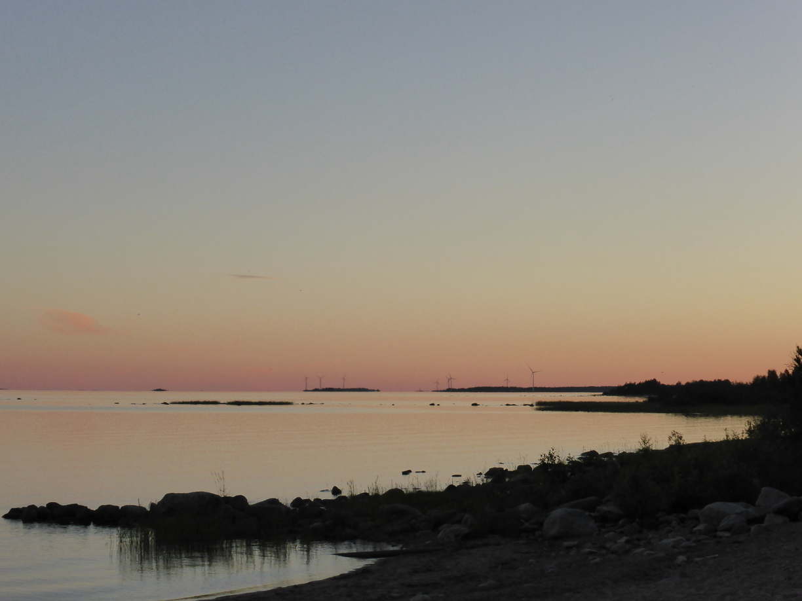
Tag 46
Kuivaniemi - Yli-Ii 53 km
Am nächsten Morgen fuhr ich erst recht spät los und Franz war schon lange unterwegs. Aber ich hatte ja Zeit und beschloss somit mich weiter ins Landesinnere durchzuschlagen um der Schnellstraße zu entkommen.
Gegen Mittag fing es an zu regnen und als ich gerade meine Regenklamotten anzog hielt ein Auto neben mir. Die Fahrerin, Sonja und ihre Tante luden mich zum Tee ein, bei einer weiteren Tante, die direkt um die Ecke wohnte. Dort angekommen gab es Tee und Pfannkuchen. Außerdem wurde eine Landkarte rausgesucht um mir bei der weiteren Planung zu helfen. Sonja war nur für ein paar Tage zu Besuch bei den Tanten und wollte sich noch die steinzeitliche Ausgrabungstätte im Ort anschauen. Sie lud mich ein mitzukommen und mir bei der Gelegenheit den Badeplatz im Ort zu zeigen.
Somit verbrachten wir einen sehr interessanten und lustigen Nachmittag. Zunächst im Museum der Ausgrabungstätte und später im Außenbereich. Dort konnte man bei den Ausgrabungen zu sehen und sich eine Rekonstruktion eines Dorfes anschauen. 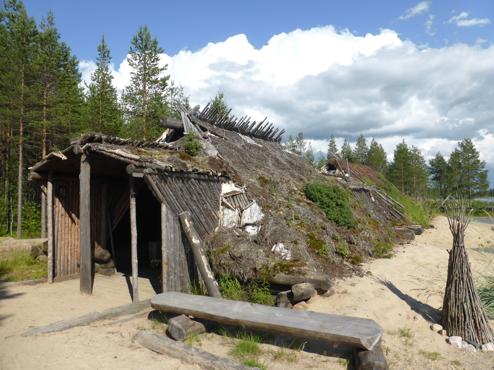 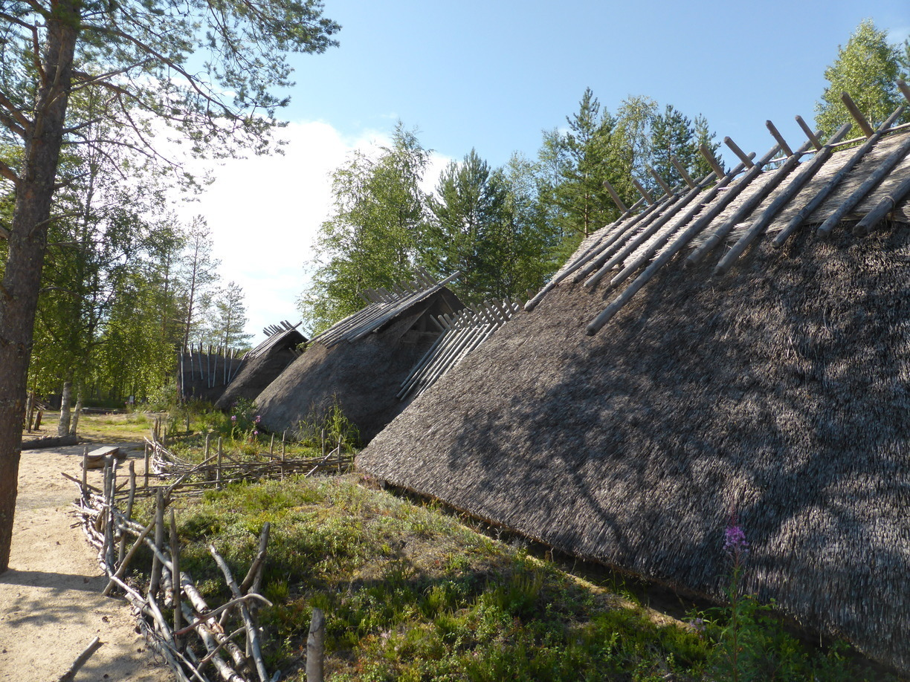 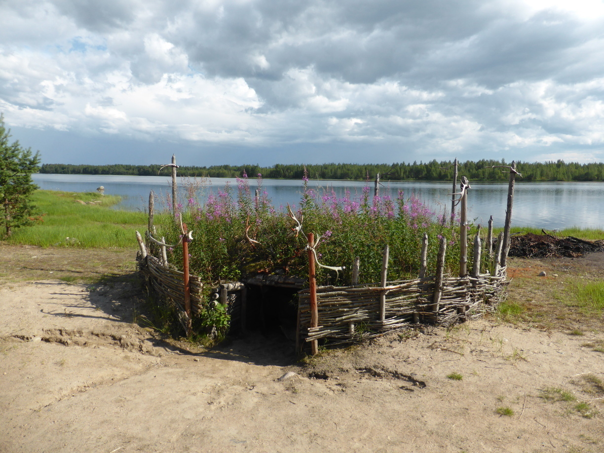
Anschließend ging es zurück zu ihrer Tante, wo noch mein Fahrrad stand. Nach einer kurzen Stärkung schwung ich mich wieder aufs Rad um zum Badeplatz zu radeln. Ich war um einige interessante Einblicke in das Leben der Steinzeitfinnen, ein Paket Pfannkuchen und eine Finnlandkarte reicher. Ein Hoch auf die finnische Gastfreundschaft!
Hier noch ein paar Bilder vom Badeplatz 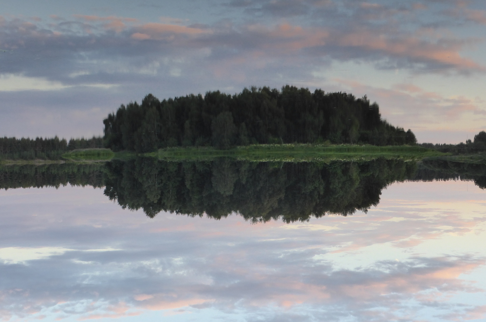 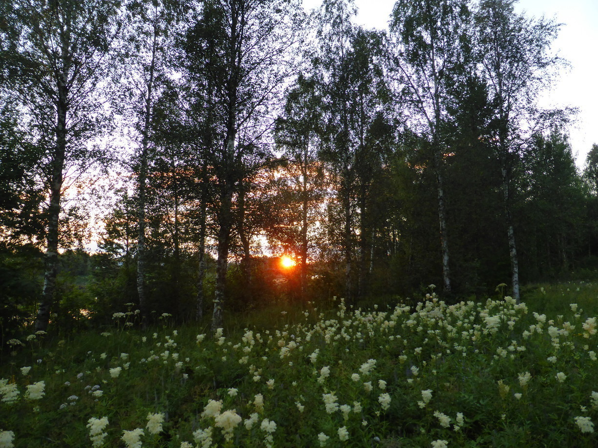
Na, wem ist aufgefallen, dass das erste Bild auf dem Kopf steht ?
Tag 47
Yli-Ii - Muhos 88 km
Auf einen sehr abwechslungsreichen Tag folgte ein ziemlich unaufregender. Ich hab nichmal ein einziges Bild gemacht.
Tag 48
Muhos - Pyhäntä 104 km
Die letzten 30 Kilometer bis nach Pyhäntä sah es fast durchgehend nach Regen aus. Zudem musste ich genau in die Richtung in der die dunkelsten Wolken waren. Die letzten 10 Kilometer Straße vor Pyhäntä waren wegen Bauarbeiten nicht asphaltiert. Als ich dann endlich einen Badeplatz gefunden hatte musste ich feststellen, das es am Badeplatz keine Wiese gab auf der ich das Zelt hätte aufstellen können. Von den sechs Erwachsenen oder Heranwachsenden Menschen am Badeplatz sprach zum Glück einer Englisch und deutete auf den benachbarten Disc Golf Platz. Also baute ich dort mein Zelt auf. 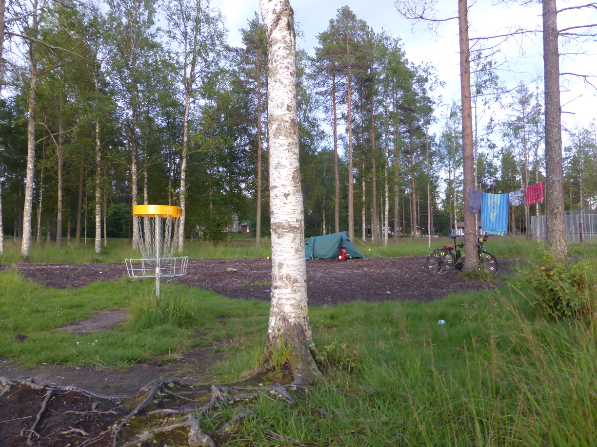 Es sah sehr nach Regen aus und ich rechnete nicht damit dass jemand zum Disc Golfen kommen würde. Natürlich kam dann wieder die Sonne raus und mit ihr die Disc Golfer. Diese blieben aber auf den übrigen Bahnen, so dass mir keine Frisbees um die Ohren flogen.
Direkt am Ufer war ein fetter Stein auf dem man sich wunderbar erholen konnte. 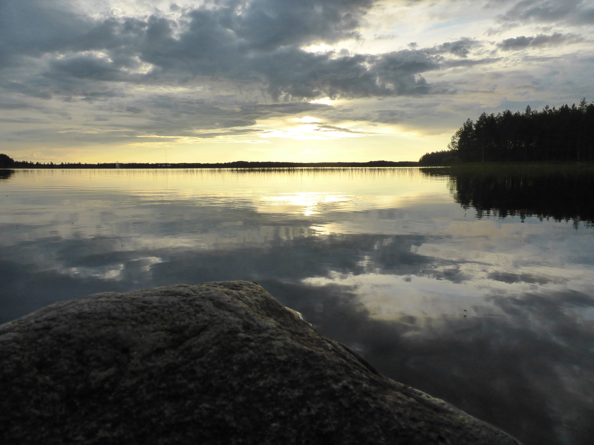 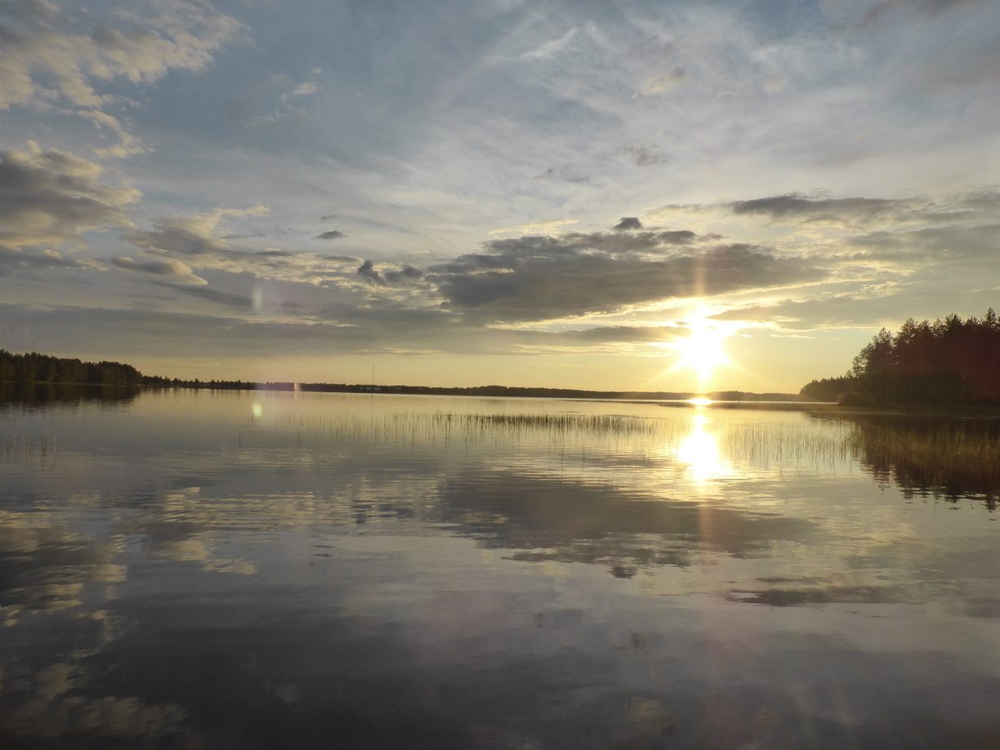 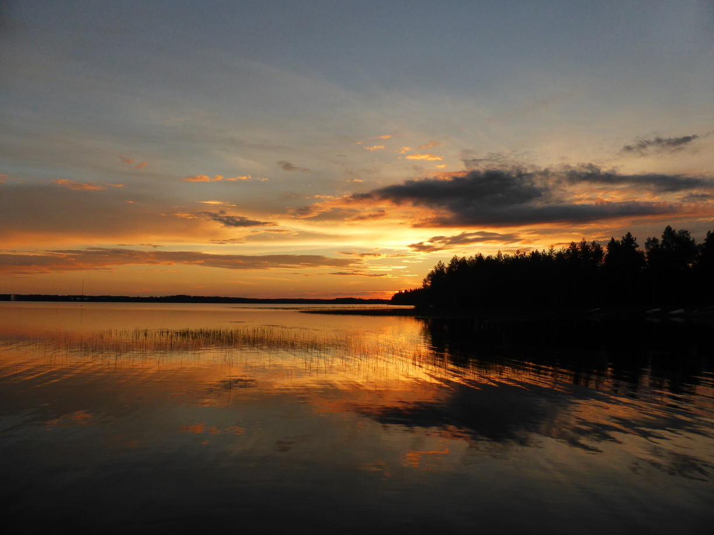